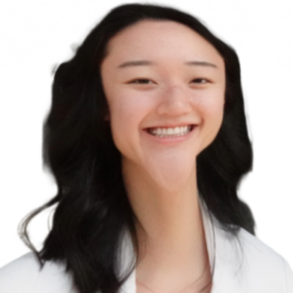
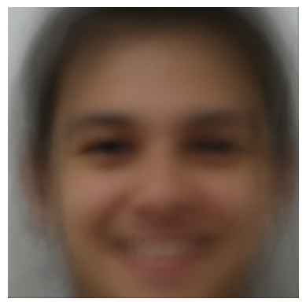
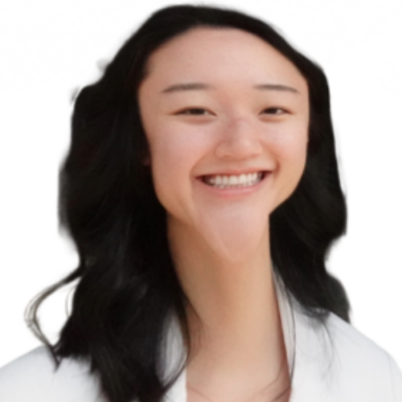

Caricatures: Extrapolating from the mean
If I extrapolate from the population mean from the last step and mess around with abnormal warp values, I can have a very big chin.
Bells and Whistles

In this project, I produced a "morph" animation of my face into another face (my roommate), computed the mean of a population of faces, and extrapolated from a population mean to see what an "average face" looked like, plus created caricatures of myself.
First, I cropped a headshot of myself and one of my roommate Ally to have the same dimensions, and so that our faces have similar size and aspect ratio. I then constructed a simple get_points function to select 50 correspondence points for each of the two images (including the four corners of the image). Finally, I created a Delaunay triangulation with the means of the correspondence points using the scipy.spatial.Delaunay function.
Before going through the entire morph sequence, let's first compute the mid-way face of Ally and I.
By slightly modifying my code from Part 2 to include two additional parameters warp_frac and cross_dissolve_frac (both varying from [0, 1]), we can create a morph sequence. Here's a sequence with 50 frames, with a duration of 10 ms per frame.
For this part, I computed the average face of 56 individuals from the FEI Dataset. I selected this specific subset to all be smiling people (showing teeth!) for less variance and blurriness. I first extracted the correspondence keypoints from the annotations for each image. Then, I averaged all correspondence points to obtain the average triangulation, warped each face in the dataset to the average shape, and cross-dissolved to achieve the final result.
We can morph each face in the dataset to this average face shape. Here's some examples:
I can not only morph my face into the average shape, but also morph the average face into my shape!
If I extrapolate from the population mean from the last step and mess around with abnormal warp values, I can have a very big chin.
